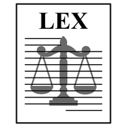
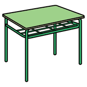
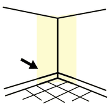
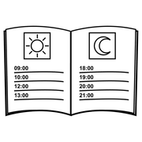
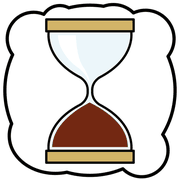
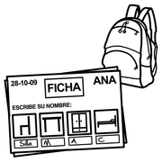
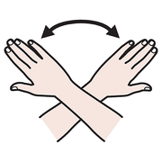

Modulo 3, organizzare
Spazi e tempi chiari
Molti comportamenti difficili nascono da un ambiente confuso o da richieste che non si capiscono. Un'aula leggibile e una giornata prevedibile sono il primo intervento, e il più efficace.
prima la
cornice,
poi il quadro
La cornice educativa
 scuola
scuola
regole silenzio
silenzioPer un alunno nello spettro, un ambiente imprevedibile è faticoso come per noi una stanza in cui tutti parlano una lingua sconosciuta. Quando l'ambiente è organizzato in modo chiaro e comprensibile, con l'aiuto di supporti visivi, una parte dei problemi di comportamento si riduce da sola. È il principio dell'insegnamento strutturato.
La cornice ha due lati: lo spazio (dove si fa che cosa) e il tempo (che cosa succede, quando, per quanto). Per tutti e due valgono quattro parole chiave:
Lo spazio che parla
 classe
classe
banco
angoloSoprattutto nei primi anni, un bambino ricava più informazioni dalle cose che dalle persone: è il modo in cui è organizzato un angolo a dirgli che cosa fare lì, quando si comincia, quando si finisce.
- Un angolo, un'attività. Il tavolo del lavoro individuale, l'angolo del gioco, quello della lettura, uno spazio morbido per calmarsi. Se ogni zona ha una funzione sola, orientarsi da soli diventa facile.
- Meno stimoli dove si lavora. Nella postazione per il lavoro individuale niente cartelloni, specchi o oggetti che distraggono. Uno scaffale può fare da separatore.
- Etichette dappertutto. Immagini, oggetti o parole sugli armadi e sulle scatole: l'alunno sa dove trovare il materiale, riesce a riordinare e può chiederlo anche senza parole.
Etichetta che dà il nome
Sta sull'oggetto stesso e lo nomina con un simbolo: la sedia, la porta, il cestino.
Etichetta che organizza
Sta fuori da scatole e armadi e dice che cosa c'è dentro. Aiuta anche a raggruppare per categorie: colori, forbici, colla.
Come si usa un'agenda

agenda prima
prima dopo
dopo- Si va all'agendaA ogni cambio di attività. Per i più piccoli si usa un oggetto o una carta di transizione.
- Si nomina l'attivitàL'adulto, o l'alunno se può, dice che cosa viene adesso.
- Si porta l'immagine dove si svolgeSi stacca e si abbina allo stesso simbolo sul tavolo o sull'angolo.
- Alla fine si mette in «finito»Una scatola o una busta: quell'attività è conclusa e il tempo è andato avanti.
Vedere il tempo che passa

clessidra cronometro
cronometro aspettare
aspettare«Ancora cinque minuti» non vuol dire niente se non si sa quanto durano cinque minuti. Un timer visivo, con un disco colorato che si riduce, serve a:
- mostrare quanto dura un compito o un'attività;
- aspettare il premio o l'attività preferita fino alla fine della richiesta;
- rendere più sopportabile l'attesa, che è una delle fonti di ansia più forti.
Esistono timer fisici, app e timer da proiettare sulla LIM: va bene qualunque strumento, purché sia sempre lo stesso.
un passo
alla volta
Scomporre il compito

compiti uno
uno
finireMolti alunni nello spettro fanno fatica con le funzioni esecutive: pianificare i passaggi, frenare una risposta impulsiva, tenere a mente tutto quello che serve mentre si lavora, controllare come sta andando.
L'analisi del compito (task analysis) scompone un'attività nei singoli passaggi e li mostra in sequenza visiva. Ecco come potrebbe essere per «lavarsi le mani»:
| 1 | Apro l'acqua. |
| 2 | Bagno le mani. |
| 3 | Prendo un po' di sapone. |
| 4 | Strofino le mani, anche il dorso, contando fino a 10. |
| 5 | Sciacquo le mani. |
| 6 | Chiudo l'acqua. |
| 7 | Asciugo le mani con la salvietta. |
Ogni passaggio ha la sua immagine. I passaggi si possono togliere uno alla volta, man mano che diventano automatici.
da fare
prima su
di sé
Prova in classe
classeagenda disegnare
disegnare- La tua giornata in immaginiCostruisci una striscia visiva della tua giornata tipo. Che livello di immagini hai scelto, e perché?
- Prova un timer visivoUsalo per un tuo compito: com'è lavorare vedendo il tempo che resta?
- Un'analisi del compitoScegli una routine della tua classe (mettere la giacca, preparare lo zaino, prepararsi per la mensa) e scomponila in passaggi con un'immagine per ciascuno.